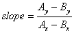
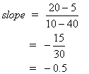
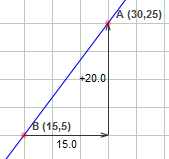
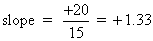
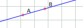
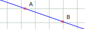
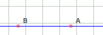
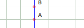

Slope of a Line (Coordinate Geometry)
Definition: The slope of a line is a number that measures its "steepness", usually denoted by the letter m.
It is the change in y for a unit change in x along the line.
Try this
Adjust the line below by dragging an orange dot at point A or B. The slope of the line is continuously recalculated.
You can also drag the origin point at (0,0).
The slope of a line (also called the gradient of a line) is a number that describes how "steep" it is. In the figure above press 'reset'.
Notice that for every increase of one unit to the right along the horizontal x-axis,
the line moves down a half unit. It therefore has a slope of -0.5.
To get from point A to B along the line, we have to move to the right 30 units and down 15.
Again, this is a half unit down for every unit across.
Because the line slopes downwards to the right, it has a negative slope. As x increases, y decreases.
If the line sloped upwards to the right, the slope would be a positive number. Adjust the points above to create a positive slope.
Formula for the slope
Given any two points on the line, its slope is given by the formula
 |
| where: |
| Ax |
is the x coordinate of point A |
| Ay |
is the y coordinate of point A |
| Bx |
is the x coordinate of point B |
| By |
is the y coordinate of point B |
It does not matter which point you choose for A or B. So long as they are both on the line somewhere,
the formula will produce the correct slope.
Example
In the diagram at the top of the page click on "reset".
Substituting the coordinates for A and B into the formula, we get

Finding the slope of a line by inspection
Rather than just plugging numbers into the formula above, we can find the slope by understanding the concept and reasoning it out.
Refer to the line below, defined by two given points A, B.
We can see that the line slopes up and to the right so the slope will be positive.

- Calculate dx, the horizontal distance from the left point to the right point.
Since B is at (15,5) its x-coordinate is the first number, 15.
The x-coordinate of A is 30. So the difference (dx) is 15.
- Calculate dy, the amount the line rises or falls as you go to the right. Since B is at (15,5)
its y-coordinate is the second number or 5.
The y-coordinate of A is 25. So the difference (dy) is +20.
It is positive because the line goes up as you go to the right.
It would have been negative otherwise.
- Dividing the rise (dy) by the run (dx):

A way to remember this method is "rise over run". It is the "rise" - the up and down difference between the points, over the "run" - the horizontal run between them.
Just remember that rise going downwards is negative.
Slope direction
The slope of a line can positive, negative, zero or undefined.
Positive slope

Here, y increases as x increases, so the line slopes upwards to the right. The slope will
be a positive number. The line on the right has a slope of about +0.3, it goes up about 0.3 for every step of 1 along the x-axis.
Negative slope

Here, y decreases as x increases, so the line slopes downwards to the right. The slope will
be a negative number. The line on the right has a slope of about -0.3, it goes down about 0.3 for every step of 1 along the x-axis.
Zero slope

Here, y does not change as x increases, so the line in exactly horizontal. The slope
of any horizontal line is always zero.
The line on the right goes neither up nor down as x increases, so its slope is zero.
Undefined slope

When the line is exactly vertical, it does not have a defined slope.
The two x coordinates are the same, so the difference is zero.
The slope calculation is then something like
When you divide anything by zero the result has no meaning.
The line above is exactly vertical, so it has no defined slope.
We say "the slope of the line AB is undefined".
A vertical line has an equation of the form x = a, where a is the x-intercept. For more on this see
Slope of a vertical line.
Equation of a line
The slope m of a line is one of the elements in the equation of a line when written in the "slope and intercept" form:
y = mx+b.
The m in the equation is the slope of the line described here.
For more on this see:
Slope as an angle
The slope of the line can also be expressed as an angle, usually in degrees or radians.
In the figure above click on "show angle". By convention the angle is measured from any horizontal line (parallel to x-axis).
Lines with a positive slope (up and to the right) have a positive angle, and a negative angle for a negative slope.
Change the slope by dragging A or B and see this for yourself.
To convert from slope m to slope angle and back:
angle = arctan(m)
m = tan(angle)
Tan, and its inverse arctan, are described in
Trigonometry Overview
Things to try
-
In the above diagram, Drag the points A and B around and notice how the calculated slope changes.
Try and get a positive, negative, zero and undefined slope
-
Click "hide details". Drag A and B to some new locations and calculate the slope of the line yourself.
Then click "show details" and see how close you got.
For a bonus, estimate the slope from two points on the line of your own choosing, rather than A and B.
-
Adjust the points A and B to get a slope of +1 and -1. What do you notice about the slope?
(Answer: the slope is 45° - the line is half way between vertical and horizontal). Click on "show angle" to verify.
Limitations
In the interest of clarity in the applet above, the coordinates are rounded off to integers and the lengths rounded to one decimal place.
This can cause calculatioons to be slightly off.
For more see
Teaching Notes
Other Coordinate Geometry topics
(C) 2011 Copyright Math Open Reference.
All rights reserved